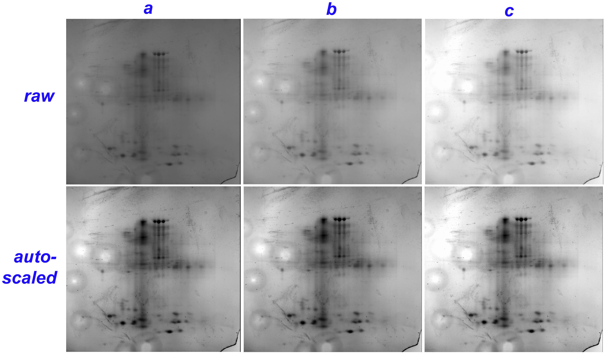
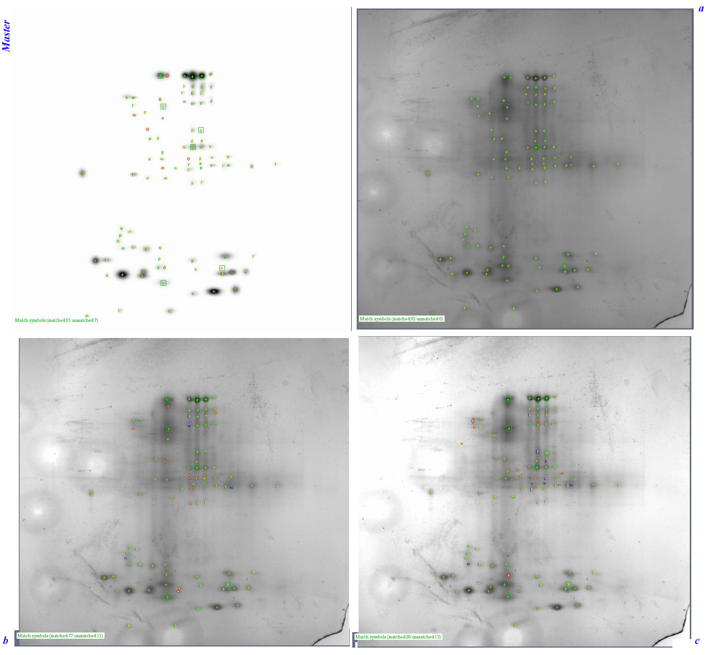

Bio-Rad PDQuest™ 2D Gel Image Analysis
Choosing the Right Exposure for 2D Image Analysis
While it seems that the eye itself is a good discriminator as to what image is the best, there are ways of getting quantitative or numerical information that might better serve in making a correct decision.
The VersaDoc 1000 camera takes an image 1317 pixels wide (on the X axis) and 1035 pixels high (on the Y axis). This is always true. The camera zoom has no bearing on this, except to affect pixel-to-pixel distance. For example at wide angle (zoomed-out), the pixel-to-pixel distance will be about 200 µm, and in telephoto (zoomed-in), it will be about half that. Thus a 7 cm gel will get greater image resolution per unit area compared to a large 17 cm gel.
Each pixel has 4096 (or 12-bit or 212) intensity (gray) levels. In PDQuest, there is an image transform feature which provides important information on the present image. One is the maximum and minimum intensity level found on the image. The other is a histogram of those intensity levels.
Perhaps the best image is one with a rather wide histogram that spreads out to the the greatest possible minimum of 0, and the greatest possible maximum of 4095. To the eye, this will be an image of significant contrast.
Consider an example. A user provides three different exposures obtained from use of the PDQuest Optimize Exposure, labeled a, b and c. The characteristics of the images are given in the table below:
| Image | Minimum Intensity Level | Maximum Intensity Level | Min-Max Difference | Histogram Features | |||
|---|---|---|---|---|---|---|---|
| Intensity of Half-Height of Peak Ascent | Mode Value: Intensity of Histogram Peak | Intensity of Half-Height of Peak Descent | Peak Width At Half-Height | ||||
| a (shortest exposure time) | 1293 | 3827 | 2534 | 2150 | 2400 | 2550 | 400 |
| b | 2 | 3696 | 3694 | 1233 | 1597 | 1787 | 554 |
| c (longest exposure time) | 1 | 3555 | 3554 | 237 | 759 | 1075 | 838 |
All three of these images of the same gel differently exposed were processed
using the Experiment
wizard, which does spot detection as well as
matching between gels. Gel b was used to set the spot detection parameters.
Its filtered image was quite speckled (black spots which were probably silver
deposits on the gel surface). In addition, the camera had an uncorrected defect
that included haloed white spots.
The PDQuest Experiment parameters are given in the table below:
| Ruby speckles | 157.0 |
|---|---|
| Smoothing | Median 3×3 |
| Background removal | Floating ball 25 |
| Other settings and options |
|
| Sensitivity for consistent spot detection | a: 2.4418, spot count: 338, average quality:59.3 (selected as master) |
| b: 2.4418, spot count: 337, average quality: 55.5 | |
| c: 2.2841, spot count: 325, average quality: 56.9 | |
| Matching | warping option selected, result is 246 matches found for gel b, and 230 matches found for gel c |
The automated spot detection however was not inadequate for the sets of gels examined here. In the image below on the top row are the raw images of one gel taken at the different exposure times, with the shortest exposure a clearly looking darker than the longest exposure c. On the bottom row, the raw images are shown as they are auto-scaled, which is PDQuest maximizing contrast by applying a mathematical transformation adjusting the minimum intensity level from 0 and the maximum intensity level from 4095. The auto-scaled images look quite similar in adjusted intensity, and the more importantly reveal a large amount of artifacts (black speckles, probably surface-precipitated material). In addition, the haloed white spots representing a camera defect are apparent. The lower right corner of the gel was torn off; as it had no information, its loss is without consequence.

Therefore all detected spots by the automated routine were removed. Far too many detected spots were the black speckles, and adjusting sensitivity and minimum peak values created an endless loop of loosing valid spots to invalid spots. The spots were manually placed since there were really so few.
The image below shows the Experiment (formerly called MatchSet)
in which spot detection was all manual and spot matching helped by landmarking.
Click directly on the image to make it bigger, and click on the bigger image
to get the image at original resolution. The centers (peaks) of the detected
spots are shown as yellow-colored +
symbols. Spots matched between gels
are indicated by green-colored lowercase letters: thus the letter k
over
a spot has its match in the same region of another gel with the letter k
over it. Note that letters are repeated: matching occurs in various regions of
a gel which are gridded.

The image of gel a (upper right in the 2 × 2 image set) shows all of its spots are matched, since it was selected as the master gel (called the reference gel in other software analysis packages). In other words, all other gels are matched or referenced against the master or reference gel. Manual spotting revealed 92 spots in gel a.
To the left of gel a (upper left in image) is the master gel. It is not a real gel, but the Gaussian image of the gel selected as the master. PDQuest processes all gels from raw → filtered → Gaussian, where the Gaussian is representation of the size and intensity (spot volume) of the stained spots. Only detected spots are shown. In the master, it indicates 85 spots were matched and 7 spots unmatched. All 92 spots are actually matched to gel a since it is the master. But unmatched spots in the master means that these spots could not be found in any of the other gels of the matchset. Thus seven spots in gel a had not matches in gels b or c.
Gel b (lower left gel in image) had 88 spots, with 77 matched to the master. Gel c (lower right) had a total of 93 spots, with 80 matched to the master. Thus only about one-fourth of the spot counts were found manually compared to the automated detection. Most automated performances are better with higher quality gels, with the difference in manual vs. automated counts usually being not more than 20% and rarely over 50%.
So which gel exposure is the best to choose?
Before all of this data were generated certain things seem obvious.
It should be kept in mind that pixel intensity levels are measured between 0 and
4095 for a total of 4096 intensity levels. A value of 4095 would indicate no
intensity, represented as a black color in the image. This a stained spot
blocks the transmission of light intensity, and represent as something
there
. A value of 0 would be the most intense with respecto the level of
light transmitted, represented as white, and indicating nothing there, no
stained spot.
All other intensities are various shades of gray. The tabel
summarizes this to reinforce these concepts.
| Pixel Intensity Value | Color in Image | Interpretation |
|---|---|---|
| 0 | white | nothing: no stained spot to stop light transmission |
| 1-4094 | various shades of gray | from little to much blocking of light transmission |
| 4095 | black | stained spot stopping transmission of light |
Thus for a very underexposed gel, the image area is darker and more of the pixels should be skewed to having the value 4095. In fact, if the maximum value is 4095 in a gel, it should be considered that the gel has been underexposed.
Similarly, for a very overexposed gel, the image area will show regions of complete white (a whiting out), and so many of the pixel values will be at the minimum intensity value of 0. If the minimum intensity level found in an image is value 0, it should be suspected that the gel is overexposed. Selecting the option of highlight saturated pixels could also indicate this fact.
Gel exposures b and c differed from gel a in that the histograms were either not centered or flat. The minimum intensity values were close to 0 (1 in b, and 2 in c, but 1293 in a. While the peak width at half-height for image a was the smallest (it seems that a more spread out peak width at half-height would give greater discrimination), the overexposures in b and c outweighed this possibly ill effect.
The PDQuest software assigned image a a slightly higher quality and thus selected it as the master on that basis. It is not always possible to choose gels of different exposure by running them through spot detection for quality measure. The histogram and the minimum and maximum levels of the Transform feature will have to be used.